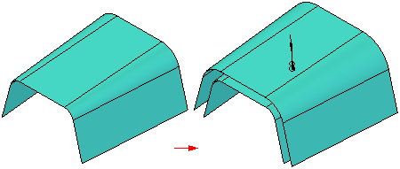
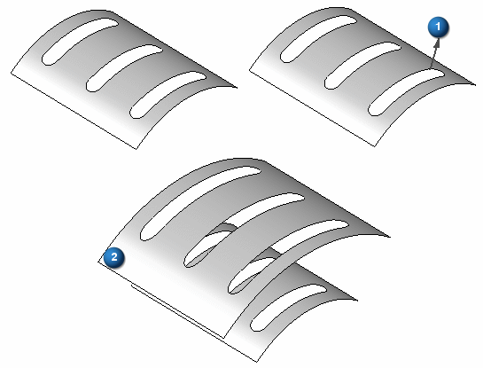

Offset Surface command
Use the Offset surface command to create a construction surface by offsetting a model face, a reference plane, or another construction surface. The new surface is offset a specified distance from the original surface, and is associative to it.

If the face or surface has boundaries, Offset Surface has options to remove or keep the boundaries on the offset surface.
The following illustration shows an offset surface (2) offset in direction (1) with the show boundaries option on.
